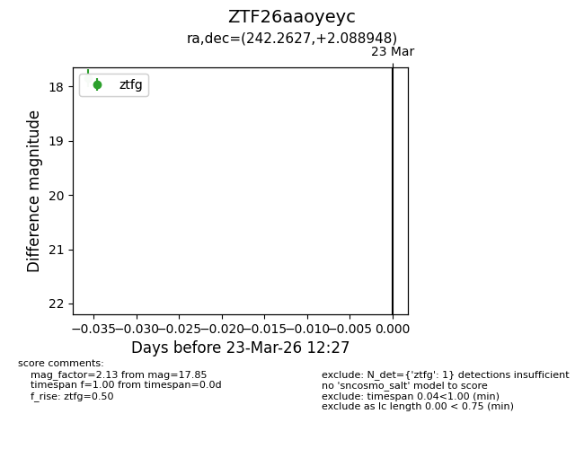
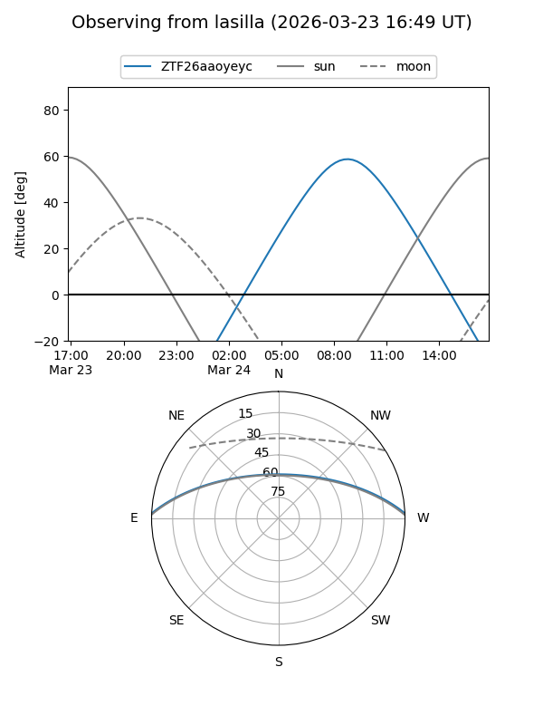
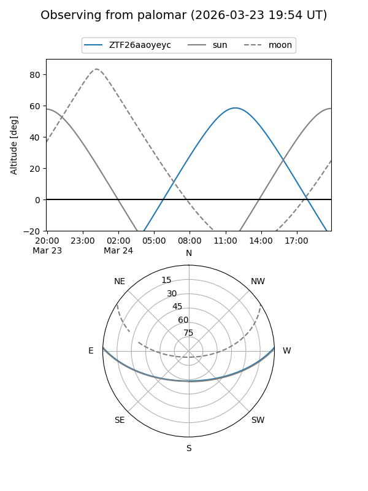

ZTF26aaoyeyc
Target ZTF26aaoyeyc at 2026-03-23 12:29
Aliases and brokers:
FINK: link
Lasair: link
ALeRCE: link
alt names
ZTF26aaoyeyc (ztf,fink_ztf)
Coordinates:
equatorial (ra, dec) = 242.2627,+2.08895
equatorial (HMS+DMS) = 16:09:03.04,+02:05:20.21
galactic (l, b) = (13.7426,+36.53972)
Flags:
Photometry:
last ztfg=17.85
1 ztfg detections
Lightcurve

Visibility


Additional plots